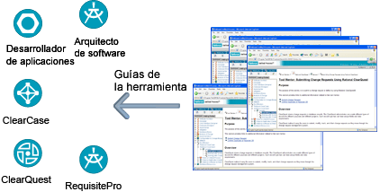

| Guía específica de herramientas |
 |
|
 Las guías de las herramientas proporcionan un enlace entre las herramientas de Rational Unified Process y otras herramientas de Rational. Para reducir el período de formación y el tiempo de inicio, Rational Unified Process (RUP) incluye un conjunto de guías de herramientas que ofrecen una guía paso a paso sobre cómo utilizar una herramienta específica para completar una tarea. Las guías de las herramientas proporcionan el enlace entre el proceso y las herramientas que se utilizan en los proyectos. Añadir herramientas nuevas es tan fácil como añadir nuevas guías de herramientas, lo que proporciona una mayor libertad de elección a la vez que una mejor integración entre el proceso y las herramientas. Las guías de las herramientas se proporcionan en la mayoría de las herramientas de Rational. |
© Copyright IBM Corp. 1987, 2006. Reservados todos los derechos. |